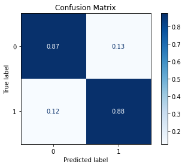

[1]:
import pandas as pd
import numpy as np
import uci_dataset as database
import raimitigations.dataprocessing as dp
Case Study 3
1 - Understanding the Data
[2]:
df = database.load_thyroid_disease()
label_col = "sick-euthyroid"
df
[2]:
| sick-euthyroid | age | sex | on_thyroxine | query_on_thyroxine | on_antithyroid_medication | thyroid_surgery | query_hypothyroid | query_hyperthyroid | pregnant | ... | T3_measured | T3 | TT4_measured | TT4 | T4U_measured | T4U | FTI_measured | FTI | TBG_measured | TBG | |
|---|---|---|---|---|---|---|---|---|---|---|---|---|---|---|---|---|---|---|---|---|---|
| 0 | sick-euthyroid | 72.0 | M | f | f | f | f | f | f | f | ... | y | 1.0 | y | 83.0 | y | 0.95 | y | 87.0 | n | NaN |
| 1 | sick-euthyroid | 45.0 | F | f | f | f | f | f | f | f | ... | y | 1.0 | y | 82.0 | y | 0.73 | y | 112.0 | n | NaN |
| 2 | sick-euthyroid | 64.0 | F | f | f | f | f | f | f | f | ... | y | 1.0 | y | 101.0 | y | 0.82 | y | 123.0 | n | NaN |
| 3 | sick-euthyroid | 56.0 | M | f | f | f | f | f | f | f | ... | y | 0.8 | y | 76.0 | y | 0.77 | y | 99.0 | n | NaN |
| 4 | sick-euthyroid | 78.0 | F | t | f | f | f | t | f | f | ... | y | 0.3 | y | 87.0 | y | 0.95 | y | 91.0 | n | NaN |
| ... | ... | ... | ... | ... | ... | ... | ... | ... | ... | ... | ... | ... | ... | ... | ... | ... | ... | ... | ... | ... | ... |
| 3158 | negative | 40.0 | F | f | f | f | f | f | f | f | ... | y | 1.2 | y | 76.0 | y | 0.90 | y | 84.0 | n | NaN |
| 3159 | negative | 69.0 | F | f | f | f | f | f | f | f | ... | y | 1.8 | y | 126.0 | y | 1.02 | y | 124.0 | n | NaN |
| 3160 | negative | 58.0 | F | f | f | f | f | f | f | f | ... | y | 1.7 | y | 86.0 | y | 0.91 | y | 95.0 | n | NaN |
| 3161 | negative | 29.0 | F | f | f | f | f | f | f | f | ... | y | 1.8 | y | 99.0 | y | 1.01 | y | 98.0 | n | NaN |
| 3162 | negative | 56.0 | F | t | f | f | f | f | f | f | ... | y | 1.8 | y | 139.0 | y | 0.97 | y | 143.0 | n | NaN |
3163 rows × 26 columns
[3]:
df[label_col] = df[label_col].replace({"sick-euthyroid": 1, "negative": 0})
[4]:
df.info()
<class 'pandas.core.frame.DataFrame'>
RangeIndex: 3163 entries, 0 to 3162
Data columns (total 26 columns):
# Column Non-Null Count Dtype
--- ------ -------------- -----
0 sick-euthyroid 3163 non-null int64
1 age 2717 non-null float64
2 sex 3090 non-null object
3 on_thyroxine 3163 non-null object
4 query_on_thyroxine 3163 non-null object
5 on_antithyroid_medication 3163 non-null object
6 thyroid_surgery 3163 non-null object
7 query_hypothyroid 3163 non-null object
8 query_hyperthyroid 3163 non-null object
9 pregnant 3163 non-null object
10 sick 3163 non-null object
11 tumor 3163 non-null object
12 lithium 3163 non-null object
13 goitre 3163 non-null object
14 TSH_measured 3163 non-null object
15 TSH 2695 non-null float64
16 T3_measured 3163 non-null object
17 T3 2468 non-null float64
18 TT4_measured 3163 non-null object
19 TT4 2914 non-null float64
20 T4U_measured 3163 non-null object
21 T4U 2915 non-null float64
22 FTI_measured 3163 non-null object
23 FTI 2916 non-null float64
24 TBG_measured 3163 non-null object
25 TBG 260 non-null float64
dtypes: float64(7), int64(1), object(18)
memory usage: 642.6+ KB
[5]:
df['query_on_thyroxine'].value_counts()
[5]:
f 3108
t 55
Name: query_on_thyroxine, dtype: int64
[6]:
counts = df['query_on_thyroxine'].value_counts().values
counts
[6]:
array([3108, 55])
[7]:
cor_feat = dp.CorrelatedFeatures(
method_num_num=["spearman", "pearson", "kendall"], # Used for Numerical x Numerical correlations
num_corr_th=0.9, # Used for Numerical x Numerical correlations
num_pvalue_th=0.05, # Used for Numerical x Numerical correlations
method_num_cat="model", # Used for Numerical x Categorical correlations
model_metrics=["f1", "auc"], # Used for Numerical x Categorical correlations
metric_th=0.9, # Used for Numerical x Categorical correlations
cat_corr_th=0.9, # Used for Categorical x Categorical correlations
cat_pvalue_th=0.01, # Used for Categorical x Categorical correlations
json_summary="./corr_json/c3_summary.json",
json_corr="./corr_json/c3_corr.json",
json_uncorr="./corr_json/c3_uncorr.json"
)
cor_feat.fit(df=df, label_col=label_col)
Remember to look through the JSON files generated in the previous cell
2 - Basic Pre-Processing
Encode Categorical Variables
[10]:
# Encode the categorical columns using One-Hot Encoding
enc_ohe = dp.EncoderOHE()
enc_ohe.fit(df)
proc_df = enc_ohe.transform(df)
proc_df
No columns specified for encoding. These columns have been automatically identfied as the following:
['sex', 'on_thyroxine', 'query_on_thyroxine', 'on_antithyroid_medication', 'thyroid_surgery', 'query_hypothyroid', 'query_hyperthyroid', 'pregnant', 'sick', 'tumor', 'lithium', 'goitre', 'TSH_measured', 'T3_measured', 'TT4_measured', 'T4U_measured', 'FTI_measured', 'TBG_measured']
[10]:
| sick-euthyroid | age | TSH | T3 | TT4 | T4U | FTI | TBG | sex_M | sex_nan | ... | sick_t | tumor_t | lithium_t | goitre_t | TSH_measured_y | T3_measured_y | TT4_measured_y | T4U_measured_y | FTI_measured_y | TBG_measured_y | |
|---|---|---|---|---|---|---|---|---|---|---|---|---|---|---|---|---|---|---|---|---|---|
| 0 | 1 | 72.0 | NaN | 1.0 | 83.0 | 0.95 | 87.0 | NaN | 1 | 0 | ... | 0 | 0 | 0 | 0 | 0 | 1 | 1 | 1 | 1 | 0 |
| 1 | 1 | 45.0 | 1.90 | 1.0 | 82.0 | 0.73 | 112.0 | NaN | 0 | 0 | ... | 0 | 0 | 0 | 0 | 1 | 1 | 1 | 1 | 1 | 0 |
| 2 | 1 | 64.0 | 0.09 | 1.0 | 101.0 | 0.82 | 123.0 | NaN | 0 | 0 | ... | 1 | 0 | 0 | 0 | 1 | 1 | 1 | 1 | 1 | 0 |
| 3 | 1 | 56.0 | 0.00 | 0.8 | 76.0 | 0.77 | 99.0 | NaN | 1 | 0 | ... | 0 | 0 | 0 | 0 | 1 | 1 | 1 | 1 | 1 | 0 |
| 4 | 1 | 78.0 | 2.60 | 0.3 | 87.0 | 0.95 | 91.0 | NaN | 0 | 0 | ... | 0 | 0 | 0 | 0 | 1 | 1 | 1 | 1 | 1 | 0 |
| ... | ... | ... | ... | ... | ... | ... | ... | ... | ... | ... | ... | ... | ... | ... | ... | ... | ... | ... | ... | ... | ... |
| 3158 | 0 | 40.0 | 2.10 | 1.2 | 76.0 | 0.90 | 84.0 | NaN | 0 | 0 | ... | 1 | 0 | 0 | 0 | 1 | 1 | 1 | 1 | 1 | 0 |
| 3159 | 0 | 69.0 | 2.60 | 1.8 | 126.0 | 1.02 | 124.0 | NaN | 0 | 0 | ... | 0 | 0 | 0 | 0 | 1 | 1 | 1 | 1 | 1 | 0 |
| 3160 | 0 | 58.0 | 5.80 | 1.7 | 86.0 | 0.91 | 95.0 | NaN | 0 | 0 | ... | 0 | 0 | 0 | 0 | 1 | 1 | 1 | 1 | 1 | 0 |
| 3161 | 0 | 29.0 | 0.80 | 1.8 | 99.0 | 1.01 | 98.0 | NaN | 0 | 0 | ... | 0 | 0 | 0 | 0 | 1 | 1 | 1 | 1 | 1 | 0 |
| 3162 | 0 | 56.0 | 0.00 | 1.8 | 139.0 | 0.97 | 143.0 | NaN | 0 | 0 | ... | 0 | 0 | 0 | 0 | 1 | 1 | 1 | 1 | 1 | 0 |
3163 rows × 27 columns
Impute Missing Data
[12]:
proc_df.isna().sum()
[12]:
sick-euthyroid 0
age 446
TSH 468
T3 695
TT4 249
T4U 248
FTI 247
TBG 2903
sex_M 0
sex_nan 0
on_thyroxine_t 0
query_on_thyroxine_t 0
on_antithyroid_medication_t 0
thyroid_surgery_t 0
query_hypothyroid_t 0
query_hyperthyroid_t 0
pregnant_t 0
sick_t 0
tumor_t 0
lithium_t 0
goitre_t 0
TSH_measured_y 0
T3_measured_y 0
TT4_measured_y 0
T4U_measured_y 0
FTI_measured_y 0
TBG_measured_y 0
dtype: int64
[14]:
imputer = dp.BasicImputer(numerical={'missing_values':np.nan,
'strategy':'constant',
'fill_value':-1})
imputer.fit(proc_df)
proc_df = imputer.transform(proc_df)
No columns specified for imputation. These columns have been automatically identified:
['age', 'TSH', 'T3', 'TT4', 'T4U', 'FTI', 'TBG']
Split Dataset
[16]:
train_x, test_x, train_y, test_y = dp.split_data(proc_df, label_col, test_size=0.25)
2 - Baseline Models
[17]:
model = dp.train_model_plot_results(train_x, train_y, test_x, test_y, model_name="xgb", train_result=False, plot_pr=False)
/home/matheus/miniconda3/envs/resp/lib/python3.7/site-packages/xgboost/sklearn.py:1224: UserWarning: The use of label encoder in XGBClassifier is deprecated and will be removed in a future release. To remove this warning, do the following: 1) Pass option use_label_encoder=False when constructing XGBClassifier object; and 2) Encode your labels (y) as integers starting with 0, i.e. 0, 1, 2, ..., [num_class - 1].
warnings.warn(label_encoder_deprecation_msg, UserWarning)
------------
TEST
------------
[[705 13]
[ 6 67]]

Acuracy: 97.60%
Precision: 0.9145305907172996
Recall: 0.9498511847979547
F1 = 0.9312604911337057
ROC AUC = 0.9742816804670508
best_th = 0.254520058631897
[19]:
model = dp.train_model_plot_results(train_x, train_y, test_x, test_y, model_name="knn", train_result=False, plot_pr=False)
------------
TEST
------------
[[527 191]
[ 25 48]]

Acuracy: 72.69%
Precision: 0.5777734825056091
Recall: 0.6957587667417102
F1 = 0.5688067837674137
ROC AUC = 0.7241672072347083
best_th = 0.2
3 - Data Transformation
DataMinMaxScaler
[34]:
scaler = dp.DataMinMaxScaler()
scaler.fit(train_x)
train_x_scl = scaler.transform(train_x)
test_x_scl = scaler.transform(test_x)
model = dp.train_model_plot_results(train_x_scl, train_y, test_x_scl, test_y, model_name="knn", train_result=False, plot_pr=False)
------------
TEST
------------
[[614 104]
[ 14 59]]
Acuracy: 85.08%
Precision: 0.6698350982767379
Recall: 0.8316861907124051
F1 = 0.7061664190193164
ROC AUC = 0.8658850688747282
best_th = 0.2
DataNormalizer
[35]:
scaler = dp.DataNormalizer()
scaler.fit(train_x)
train_x_scl = scaler.transform(train_x)
test_x_scl = scaler.transform(test_x)
model = dp.train_model_plot_results(train_x_scl, train_y, test_x_scl, test_y, model_name="knn", train_result=False, plot_pr=False)
No columns specified for imputation. These columns have been automatically identified:
[]
WARNING: No columns with NaN values identified. Nothing to be done.
------------
TEST
------------
[[550 168]
[ 21 52]]

Acuracy: 76.11%
Precision: 0.599793026588123
Recall: 0.7391727401076048
F1 = 0.6041617572687773
ROC AUC = 0.7678864425535161
best_th = 0.2
DataQuantileTransformer
[37]:
scaler = dp.DataQuantileTransformer()
scaler.fit(train_x)
train_x_scl = scaler.transform(train_x)
test_x_scl = scaler.transform(test_x)
model = dp.train_model_plot_results(train_x_scl, train_y, test_x_scl, test_y, model_name="knn", train_result=False, plot_pr=False)
------------
TEST
------------
[[623 95]
[ 15 58]]

Acuracy: 86.09%
Precision: 0.6777869977667138
Recall: 0.8311042851146639
F1 = 0.7160766961651917
ROC AUC = 0.8570706299843553
best_th = 0.2
DataRobustScaler
[38]:
scaler = dp.DataRobustScaler()
scaler.fit(train_x)
train_x_scl = scaler.transform(train_x)
test_x_scl = scaler.transform(test_x)
model = dp.train_model_plot_results(train_x_scl, train_y, test_x_scl, test_y, model_name="knn", train_result=False, plot_pr=False)
------------
TEST
------------
[[643 75]
[ 16 57]]

Acuracy: 88.50%
Precision: 0.7037694854462685
Recall: 0.8381825466478422
F1 = 0.7450059337194679
ROC AUC = 0.8543041935360781
best_th = 0.2
DataPowerTransformer
[39]:
scaler = dp.DataPowerTransformer()
scaler.fit(train_x)
train_x_scl = scaler.transform(train_x)
test_x_scl = scaler.transform(test_x)
model = dp.train_model_plot_results(train_x_scl, train_y, test_x_scl, test_y, model_name="knn", train_result=False, plot_pr=False)
------------
TEST
------------
[[620 98]
[ 15 58]]

Acuracy: 85.71%
Precision: 0.6740864122753887
Recall: 0.8290151486244133
F1 = 0.7115160552161297
ROC AUC = 0.8544568245125349
best_th = 0.2
DataStandardScaler
[40]:
scaler = dp.DataStandardScaler()
scaler.fit(train_x)
train_x_scl = scaler.transform(train_x)
test_x_scl = scaler.transform(test_x)
model = dp.train_model_plot_results(train_x_scl, train_y, test_x_scl, test_y, model_name="knn", train_result=False, plot_pr=False)
------------
TEST
------------
[[617 101]
[ 13 60]]

Acuracy: 85.59%
Precision: 0.6760179434092477
Recall: 0.840624642271149
F1 = 0.7141253899414136
ROC AUC = 0.8734212233372763
best_th = 0.2
4 - Feature Selection
[41]:
feat_sel = dp.SeqFeatSelection(n_jobs=4, forward=False)
feat_sel.fit(X=train_x_scl, y=train_y)
train_x_sel = feat_sel.transform(train_x_scl)
test_x_sel = feat_sel.transform(test_x_scl)
No columns specified for imputation. These columns have been automatically identified:
[]
WARNING: No columns with NaN values identified. Nothing to be done.
No columns specified for encoding. These columns have been automatically identfied as the following:
[]
[Parallel(n_jobs=4)]: Using backend LokyBackend with 4 concurrent workers.
[Parallel(n_jobs=4)]: Done 26 out of 26 | elapsed: 0.8s finished
[2022-03-16 16:08:15] Features: 25/1 -- score: 0.868352971568951[Parallel(n_jobs=4)]: Using backend LokyBackend with 4 concurrent workers.
[Parallel(n_jobs=4)]: Done 18 out of 25 | elapsed: 0.1s remaining: 0.0s
[Parallel(n_jobs=4)]: Done 25 out of 25 | elapsed: 0.1s finished
[2022-03-16 16:08:15] Features: 24/1 -- score: 0.8632533407171614[Parallel(n_jobs=4)]: Using backend LokyBackend with 4 concurrent workers.
[Parallel(n_jobs=4)]: Done 24 out of 24 | elapsed: 0.1s finished
[2022-03-16 16:08:15] Features: 23/1 -- score: 0.8709135937889458[Parallel(n_jobs=4)]: Using backend LokyBackend with 4 concurrent workers.
[Parallel(n_jobs=4)]: Done 23 out of 23 | elapsed: 0.1s finished
[2022-03-16 16:08:15] Features: 22/1 -- score: 0.8856119339760764[Parallel(n_jobs=4)]: Using backend LokyBackend with 4 concurrent workers.
[Parallel(n_jobs=4)]: Done 22 out of 22 | elapsed: 0.1s finished
[2022-03-16 16:08:15] Features: 21/1 -- score: 0.8684580537540949[Parallel(n_jobs=4)]: Using backend LokyBackend with 4 concurrent workers.
[Parallel(n_jobs=4)]: Done 21 out of 21 | elapsed: 0.1s finished
[2022-03-16 16:08:15] Features: 20/1 -- score: 0.8901361013190185[Parallel(n_jobs=4)]: Using backend LokyBackend with 4 concurrent workers.
[Parallel(n_jobs=4)]: Done 20 out of 20 | elapsed: 0.1s finished
[2022-03-16 16:08:15] Features: 19/1 -- score: 0.8607409678803296[Parallel(n_jobs=4)]: Using backend LokyBackend with 4 concurrent workers.
[Parallel(n_jobs=4)]: Done 12 out of 19 | elapsed: 0.1s remaining: 0.0s
[Parallel(n_jobs=4)]: Done 19 out of 19 | elapsed: 0.1s finished
[2022-03-16 16:08:15] Features: 18/1 -- score: 0.8833049574096514[Parallel(n_jobs=4)]: Using backend LokyBackend with 4 concurrent workers.
[Parallel(n_jobs=4)]: Done 18 out of 18 | elapsed: 0.1s finished
[2022-03-16 16:08:15] Features: 17/1 -- score: 0.8710376523643619[Parallel(n_jobs=4)]: Using backend LokyBackend with 4 concurrent workers.
[Parallel(n_jobs=4)]: Done 10 out of 17 | elapsed: 0.0s remaining: 0.0s
[Parallel(n_jobs=4)]: Done 17 out of 17 | elapsed: 0.1s finished
[2022-03-16 16:08:15] Features: 16/1 -- score: 0.894258496196271[Parallel(n_jobs=4)]: Using backend LokyBackend with 4 concurrent workers.
[Parallel(n_jobs=4)]: Done 16 out of 16 | elapsed: 0.1s finished
[2022-03-16 16:08:15] Features: 15/1 -- score: 0.8726280505214093[Parallel(n_jobs=4)]: Using backend LokyBackend with 4 concurrent workers.
[Parallel(n_jobs=4)]: Done 15 out of 15 | elapsed: 0.1s finished
[2022-03-16 16:08:16] Features: 14/1 -- score: 0.8581417782288049[Parallel(n_jobs=4)]: Using backend LokyBackend with 4 concurrent workers.
[Parallel(n_jobs=4)]: Done 14 out of 14 | elapsed: 0.1s finished
[2022-03-16 16:08:16] Features: 13/1 -- score: 0.8559216737333335[Parallel(n_jobs=4)]: Using backend LokyBackend with 4 concurrent workers.
[Parallel(n_jobs=4)]: Done 13 out of 13 | elapsed: 0.1s remaining: 0.0s
[Parallel(n_jobs=4)]: Done 13 out of 13 | elapsed: 0.1s finished
[2022-03-16 16:08:16] Features: 12/1 -- score: 0.8738943726280625[Parallel(n_jobs=4)]: Using backend LokyBackend with 4 concurrent workers.
[Parallel(n_jobs=4)]: Done 12 out of 12 | elapsed: 0.1s remaining: 0.0s
[Parallel(n_jobs=4)]: Done 12 out of 12 | elapsed: 0.1s finished
[2022-03-16 16:08:16] Features: 11/1 -- score: 0.867711878605276[Parallel(n_jobs=4)]: Using backend LokyBackend with 4 concurrent workers.
[Parallel(n_jobs=4)]: Done 11 out of 11 | elapsed: 0.0s finished
[2022-03-16 16:08:16] Features: 10/1 -- score: 0.8817404840277453[Parallel(n_jobs=4)]: Using backend LokyBackend with 4 concurrent workers.
[Parallel(n_jobs=4)]: Done 10 out of 10 | elapsed: 0.0s finished
[2022-03-16 16:08:16] Features: 9/1 -- score: 0.8703359336939142[Parallel(n_jobs=4)]: Using backend LokyBackend with 4 concurrent workers.
[Parallel(n_jobs=4)]: Done 7 out of 9 | elapsed: 0.0s remaining: 0.0s
[Parallel(n_jobs=4)]: Done 9 out of 9 | elapsed: 0.0s finished
[2022-03-16 16:08:16] Features: 8/1 -- score: 0.8794422946450903[Parallel(n_jobs=4)]: Using backend LokyBackend with 4 concurrent workers.
[Parallel(n_jobs=4)]: Done 6 out of 8 | elapsed: 0.0s remaining: 0.0s
[Parallel(n_jobs=4)]: Done 8 out of 8 | elapsed: 0.0s finished
[2022-03-16 16:08:16] Features: 7/1 -- score: 0.9133106442401542[Parallel(n_jobs=4)]: Using backend LokyBackend with 4 concurrent workers.
[Parallel(n_jobs=4)]: Done 4 out of 7 | elapsed: 0.0s remaining: 0.0s
[Parallel(n_jobs=4)]: Done 7 out of 7 | elapsed: 0.0s finished
[2022-03-16 16:08:16] Features: 6/1 -- score: 0.9263353241950659[Parallel(n_jobs=4)]: Using backend LokyBackend with 4 concurrent workers.
[Parallel(n_jobs=4)]: Done 3 out of 6 | elapsed: 0.0s remaining: 0.0s
[Parallel(n_jobs=4)]: Done 6 out of 6 | elapsed: 0.0s finished
[2022-03-16 16:08:16] Features: 5/1 -- score: 0.9328703303864927[Parallel(n_jobs=4)]: Using backend LokyBackend with 4 concurrent workers.
[Parallel(n_jobs=4)]: Done 5 out of 5 | elapsed: 0.0s finished
[2022-03-16 16:08:16] Features: 4/1 -- score: 0.937352534614908[Parallel(n_jobs=4)]: Using backend LokyBackend with 4 concurrent workers.
[Parallel(n_jobs=4)]: Done 4 out of 4 | elapsed: 0.0s finished
[2022-03-16 16:08:16] Features: 3/1 -- score: 0.9373839467802115[Parallel(n_jobs=3)]: Using backend LokyBackend with 3 concurrent workers.
[Parallel(n_jobs=3)]: Done 3 out of 3 | elapsed: 0.1s finished
[2022-03-16 16:08:16] Features: 2/1 -- score: 0.9373682406975599[Parallel(n_jobs=2)]: Using backend LokyBackend with 2 concurrent workers.
[Parallel(n_jobs=2)]: Done 2 out of 2 | elapsed: 0.5s finished
[2022-03-16 16:08:17] Features: 1/1 -- score: 0.9372638858334333
[42]:
feat_sel.get_selected_features()
[42]:
['T3', 'pregnant_t', 'FTI_measured_y']
[43]:
model = dp.train_model_plot_results(train_x_sel, train_y, test_x_sel, test_y, model_name="knn", train_result=False, plot_pr=False)
------------
TEST
------------
[[649 69]
[ 2 71]]

Acuracy: 91.02%
Precision: 0.7520353302611367
Recall: 0.9382512305872477
F1 = 0.8074019965911858
ROC AUC = 0.9573491815163887
best_th = 0.2
5 - Synthetic Data
imblearn Library
[44]:
train_y.value_counts()
[44]:
0 2152
1 220
Name: sick-euthyroid, dtype: int64
[47]:
rebalance = dp.Rebalance(
X=train_x_sel,
y=train_y,
strategy_over={0:2152, 1:400},
over_sampler=True,
under_sampler=False
)
train_x_res, train_y_res = rebalance.fit_resample()
train_y_res.value_counts()
No columns specified for imputation. These columns have been automatically identified:
[]
WARNING: No columns with NaN values identified. Nothing to be done.
SMOTE.
Running oversampling...
...finished
[47]:
0 2152
1 400
Name: sick-euthyroid, dtype: int64
[48]:
model = dp.train_model_plot_results(train_x_res, train_y_res, test_x_sel, test_y, model_name="knn", train_result=False, plot_pr=False)
------------
TEST
------------
[[649 69]
[ 2 71]]

Acuracy: 91.02%
Precision: 0.7520353302611367
Recall: 0.9382512305872477
F1 = 0.8074019965911858
ROC AUC = 0.9585988476361278
best_th = 0.2
Creating Artificial Data using Deep Learning
CTGAN
Let’s use the dataset with the original categorical variables, since CTGAN is capable of dealing with categorical variables internally. We will start by re-encoding the ordinal variables. We then proceed to split the dataset before using the CTGAN. This guarantees that we don’t contaminate our test set.
[69]:
synth = dp.Synthesizer(
X=train_x_sel,
y=train_y,
epochs=400,
model="ctgan",
load_existing=True
)
synth.fit()
conditions = {label_col:1} # create more of the undersampled class
syn_train_x, syn_train_y = synth.transform(X=train_x_sel, y=train_y, n_samples=200, conditions=conditions)
syn_train_y.value_counts()
Loading existing sythesizer model (CTGAN_400.pkl)...
LOADED model of class CTGAN.
[69]:
0 2152
1 420
Name: sick-euthyroid, dtype: int64
[70]:
model = dp.train_model_plot_results(syn_train_x, syn_train_y, test_x_sel, test_y, model_name="knn", train_result=False, plot_pr=False)
------------
TEST
------------
[[649 69]
[ 2 71]]

Acuracy: 91.02%
Precision: 0.7520353302611367
Recall: 0.9382512305872477
F1 = 0.8074019965911858
ROC AUC = 0.9589995039493265
best_th = 0.2
Let’s try creating more artificial instances and check how this impacts the model’s performance.
[77]:
conditions = {label_col:1} # create more of the undersampled class
syn_train_x, syn_train_y = synth.transform(X=train_x_sel, y=train_y, n_samples=600, conditions=conditions)
model = dp.train_model_plot_results(syn_train_x, syn_train_y, test_x_sel, test_y, model_name="knn", train_result=False, plot_pr=False)
------------
TEST
------------
[[604 114]
[ 0 73]]

Acuracy: 85.59%
Precision: 0.6951871657754011
Recall: 0.9206128133704735
F1 = 0.7376527406028162
ROC AUC = 0.9649902697752508
best_th = 0.2
TVAE
[78]:
synth = dp.Synthesizer(
X=train_x_sel,
y=train_y,
epochs=400,
model="tvae",
load_existing=True
)
synth.fit()
conditions = {label_col:1} # create more of the undersampled class
syn2_train_x, syn2_train_y = synth.transform(X=train_x_sel, y=train_y, n_samples=200, conditions=conditions)
model = dp.train_model_plot_results(syn2_train_x, syn2_train_y, test_x_sel, test_y, model_name="knn", train_result=False, plot_pr=False)
/home/matheus/miniconda3/envs/resp/lib/python3.7/site-packages/sklearn/mixture/_base.py:282: ConvergenceWarning: Initialization 1 did not converge. Try different init parameters, or increase max_iter, tol or check for degenerate data.
ConvergenceWarning,
/home/matheus/miniconda3/envs/resp/lib/python3.7/site-packages/sklearn/mixture/_base.py:146: ConvergenceWarning: Number of distinct clusters (2) found smaller than n_clusters (10). Possibly due to duplicate points in X.
.fit(X)
/home/matheus/miniconda3/envs/resp/lib/python3.7/site-packages/sklearn/mixture/_base.py:146: ConvergenceWarning: Number of distinct clusters (2) found smaller than n_clusters (10). Possibly due to duplicate points in X.
.fit(X)
------------
TEST
------------
[[677 41]
[ 6 67]]

Acuracy: 94.06%
Precision: 0.8057927986551705
Recall: 0.930352577555615
F1 = 0.8533920128085306
ROC AUC = 0.9656866486053345
best_th = 0.4